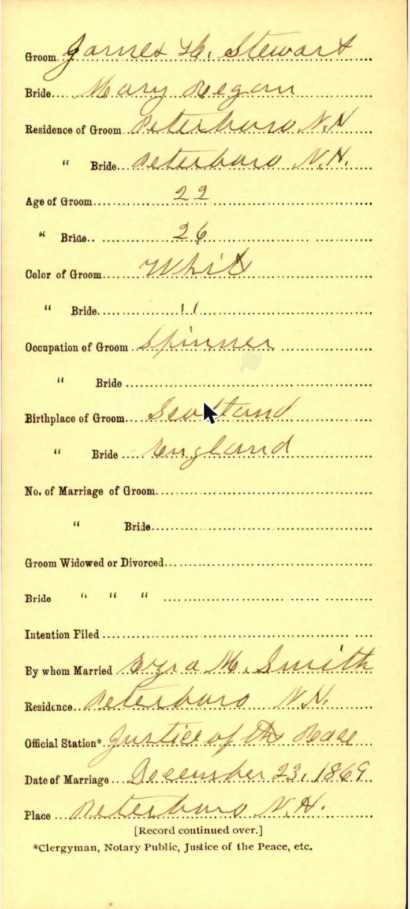
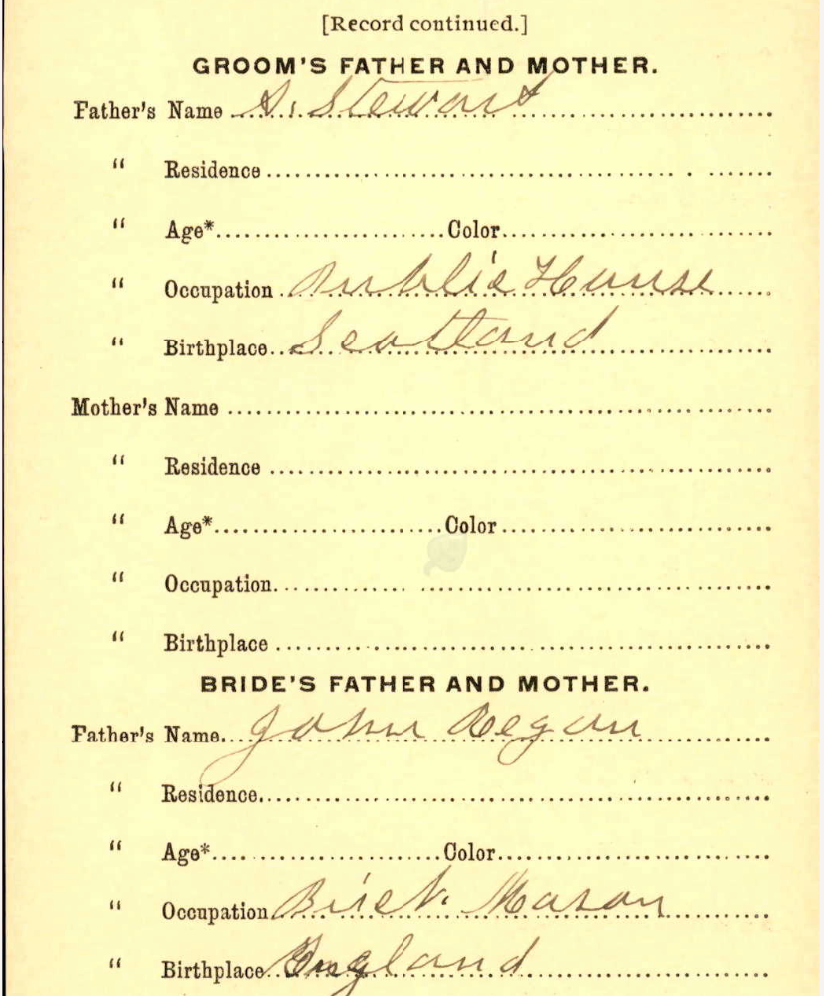

Margaret’s widowed mother marries James H. Stewart, Peterborough, New Hampshire, December 23, 1869
New Hampshire, U.S., Marriage Records, 1700–1974, Stebbins–Sweeney (Ancestry collection 61836, record 200702, images 61836_01_0717-03312 and -03313); New Hampshire Marriage Records Index (collection 2554, records 200427, 701585)


The original record, as it appears in the register or index.
What this document is
A marriage record, written when the couple married.
What it says
New Hampshire marriage record (front): Groom James H. Stewart; bride Mary Regan; both residing in Peterboro, N.H.; groom 22, bride 26; white; groom’s occupation spinner; groom born Scotland, bride born England; married by Ezra M. Smith of Peterboro, Justice of the Peace, December 23, 1869, at Peterboro. (Back): groom’s father A. Stewart, keeper of a public house, born Scotland; bride’s father John Regan, brick mason, born England. Copy certified 1905. Evidence that this bride was Margaret Jane Nodders’s mother (indirect; the card names no earlier husband or child, and the number-of-marriage and widowed fields are blank): she married under her maiden name Regan; her age (26, born about 1843), her English birth and her Regan maiden name all match the Mary E. Regan who married Atkinson Nodders in 1862; and in 1910 and 1915 the Darcys’ household includes the widow “Mary E. Stewart,” mother-in-law. Conflicts still to resolve: this bride’s father was born in England, but in 1910 Mary E. Stewart gave her father’s birthplace as Ireland; James, 22 in 1869, is 36 in the 1880 Fall River census (should be 32–33); Margaret is 10 there (should be 11); and Margaret’s father is named Henry (1888), William (1942) and Atkinson (1862, 1866). If the identification holds, it would explain why one record calls Margaret “Stewart.”
Place
Peterborough, Hillsborough County, New Hampshire
How it was read
proven